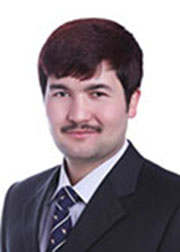

自强不息 做一个让东师骄傲的新疆人
阿卜杜开比尔•阿卜杜凯尤，新疆维吾尔自治区和田人，中共党员，2007年考入东北师范大学，2009年升入本科，现在是政法学院09级思想政治教育专业的学生。2011年被评为长春市“十佳大学生”，东北师范大学五四优秀团员，优秀班干部，东北师范大学“理想与长才报告团”候选人。本科二年级开始担任民族教育学院的助理辅导员，以一颗感恩、回报的心一直从事少数民族学生教育工作。
一、坎坷求学路
阿卜杜开比尔•阿卜杜凯尤出生一个普通的农民家庭，贫困就像他们的代名词，其他三个兄弟姐妹在接受完义务教育之后就辍学了。大姐在离开学校的时候的泪水似乎也灼伤了他的梦想。2007年，国家出台的公费师范生政策圆了他大学的梦想，他义不容辞的填报了东北师范大学，希望在毕业后也能够将火种传递到自己的家乡。当他在窘境中亦步亦趋时，国家给了他明灯，给了他方向，让他能够在追求梦想的道路上勇敢前行。
一、坎坷求学路
阿卜杜开比尔•阿卜杜凯尤出生一个普通的农民家庭，贫困就像他们的代名词，其他三个兄弟姐妹在接受完义务教育之后就辍学了。大姐在离开学校的时候的泪水似乎也灼伤了他的梦想。2007年，国家出台的公费师范生政策圆了他大学的梦想，他义不容辞的填报了东北师范大学，希望在毕业后也能够将火种传递到自己的家乡。当他在窘境中亦步亦趋时，国家给了他明灯，给了他方向，让他能够在追求梦想的道路上勇敢前行。
二、迎接挑战，坚定信仰，永不退缩
阿卜杜开比尔•阿卜杜凯尤来自于新疆和田地区，他的家乡96%的人口是维吾尔族，汉语在他们那里就便成了外语，于是到了大学，他仿佛一下子变成了聋子、哑巴，这时，是辅导员老师给了他莫大的关怀和鼓励。辅导员老师是一名老党员，在他身上阿卜杜开比尔•阿卜杜凯尤看到了一名普通党员的光辉。那时，阿卜杜开比尔•阿卜杜凯尤的心里埋下了一颗种子，一颗共产党员的种子。他想要通过自己的努力使它生根、发芽，长成参天大树。在老师的帮助下，阿卜杜开比尔•阿卜杜凯尤通过各种途径学习汉语，积极地与汉族同学交流，每天坚持阅读报刊，大声朗诵汉语课文。在学习中他重新找到了前进的动力，勇敢地接受新的挑战。阿卜杜开比尔•阿卜杜凯尤还承担了学院的部分学生工作，成为了老师和维吾尔族学生沟通的桥梁和纽带。
在工作中，他发现维吾尔族学生有一套独立于学校管理体制之外的内部管理制度，新老生之间有明显的等级之分，老生传输给新生的思想是那么偏激和不团结。于是，阿卜杜开比尔•阿卜杜凯尤决心改变，改变维吾尔族学生的学习、生活态度，重塑维吾尔族学生在其他民族学生中的形象。作为班长，他号召全班同学向考试舞弊说不，承诺尊重老师和同学，热情的对待每一个人。当他升入高年级后，按照惯例对所有新生进行了一次特别的“新生教育”。内容是如何帮助他们适应大学生活，学习汉语，要求他们在民族内部团结的基础上，还要积极融入其他民族，和谐相处。2009年，阿卜杜开比尔•阿卜杜凯尤站在党旗下庄严宣誓，成为了一名中国共产党员。
三、高举党旗跟党走 党的恩情永不忘
东北师范大学在东北三省是除民族类院校外，少数民族学生最多的学校。尤其是新疆少数民族学生（主要维、哈、柯）比较集中，学校拥有少数民族学生预科培养基地，每年来学校读书的新疆少数民族预科学生将近500，在校本科生300多。阿卜杜开比尔•阿卜杜凯尤意识到在自己民族群体中需要一种引导，引导这个民族群体更快，更和谐的消除文化差异，团结，顺利地融入到这个东北师范大学民族大家庭，在学校和新疆少数民族学生之间做好桥梁作用。于是他利用课余时间到预科基地协助老师做好新疆少数民族学生管理工作，由于工作表现突出，被聘请为民族教育学院的助理辅导员。两年中，他在出色完成自己课业的同时，充分发挥了自己的语言优势，帮助学院、学生以及家长进行沟通，经常深入学生寝室，帮助学生解决各种问题。2011年3月，一个维吾尔族预科生被几个喝醉的人打伤了，伤势严重，听到这个消息的他第一时间赶到现场先把学生送到医院，在看到其他维吾尔学生情绪激动的情况下，开比尔一夜没有休息，陪伴其他学生，一直做着思想工作，让他们相信学校，相信政府，成功避免了一场民族问题的发生。同年，在学校民族教育学院读两年预科的一个哈萨克族女学生，因为跟家人关系不和睦，经常迷恋上网，开学初，将行李放在宿舍里面就失踪了，晚上9点多学生仍没有消息，阿卜杜开比尔收到这消息以后，协助学生老师向父母说明了情况，通过向同班同学、室友咨询，了解了学生近期情况，得知学生一年以来一直同广州的网友保持恋爱关系，近期网友来到长春，此后的六天学生仍没有消息，期间开比尔一直和家长保持联系，家长来到学校后十分不配合，甚至威胁学院如果不给她找她女儿，会互动家乡老乡闹事。这时阿卜杜开比尔用民族语言给家长解释了事情的过程，做思想工作，做工作的过程中还被家长称之为“民族的叛徒”，但是他还是很耐心的安慰家长，带他去见学院领导，陪同家长去公安局，将寻找学生放在了第一位。通过大家的努力，10天后终于发现女孩在广州的地址，将之成功劝回。一直以来他就这样为这个民族群体和谐发展和成长无偿地付出，所以他成为了新疆少数民族学生心中的大哥哥和优秀代表，他时刻提醒每一名新疆同学，中国56个民族还有一个共同的名字，那就是中华民族。在他的努力下，两年来，新疆少数民族学生的汉语水平有了很大的提高，并且在学校、学院大型活动上都有他们积极参与的身影，重塑了新疆少数民族学生形象。
他每次放假回家乡也没有休息，时刻不忘党政府，学校对他的关心和培养，每次回家乡充分发挥党员模范作用，协助乡政府组织大学生青年到农民家庭宣传党，让他们能够正确地理解国家对少数民族人民的关怀和优惠政策，防止大家听信破坏分子的反动言论，在家乡少数民族农村干部没有汉语文字常识的情况下，无偿地、义务地去帮助他们写汉语文章，翻译汉语文字的通知，还帮助村民填写了全村农民的新型农村合作医疗的家庭成员信息。2011年，开比尔家乡和田大枣丰收的一年，但是地理环境的偏僻和加上少数民族农民的语言问题，大枣没法往外出售，待售的大枣十几万吨。他了解在吉林农业大学读书的老乡买买提帮家乡卖大枣，阿卜杜开比尔跟这个老乡联系后，无偿地帮他卖了近4000斤的枣，而且，一直持续着。几年以来他一直尽自己最大的力量为家乡的建设作出一份贡献。
阿卜杜开比尔•阿卜杜凯尤家境贫寒，但胸怀西部，心系家乡，将个人抱负与时代要求紧密结合在一起，用自己的知识和感恩之心为学校和同学们服务；他一直坚强自立，自强不息，从一点一滴做起，树立了远大志向，养成了良好的品德。阿卜杜开比尔•阿卜杜凯尤感受着国家、学校对少数民族学生的关怀，见证了许多少数民族学生的成长。所以他每次跟别人说我五年的大学生活里一直得到了老师以及很多好心人的帮助，关怀和鼓励。得到了国家，社会党的关怀，这些帮助和关怀会激励我不懈努力。他衷心地感谢给予他无私帮助的人们，他的未来将扎根于基础教育的土壤中，在他挚爱的家乡继续播撒知识的种子。
阿卜杜开比尔•阿卜杜凯尤来自于新疆和田地区，他的家乡96%的人口是维吾尔族，汉语在他们那里就便成了外语，于是到了大学，他仿佛一下子变成了聋子、哑巴，这时，是辅导员老师给了他莫大的关怀和鼓励。辅导员老师是一名老党员，在他身上阿卜杜开比尔•阿卜杜凯尤看到了一名普通党员的光辉。那时，阿卜杜开比尔•阿卜杜凯尤的心里埋下了一颗种子，一颗共产党员的种子。他想要通过自己的努力使它生根、发芽，长成参天大树。在老师的帮助下，阿卜杜开比尔•阿卜杜凯尤通过各种途径学习汉语，积极地与汉族同学交流，每天坚持阅读报刊，大声朗诵汉语课文。在学习中他重新找到了前进的动力，勇敢地接受新的挑战。阿卜杜开比尔•阿卜杜凯尤还承担了学院的部分学生工作，成为了老师和维吾尔族学生沟通的桥梁和纽带。
在工作中，他发现维吾尔族学生有一套独立于学校管理体制之外的内部管理制度，新老生之间有明显的等级之分，老生传输给新生的思想是那么偏激和不团结。于是，阿卜杜开比尔•阿卜杜凯尤决心改变，改变维吾尔族学生的学习、生活态度，重塑维吾尔族学生在其他民族学生中的形象。作为班长，他号召全班同学向考试舞弊说不，承诺尊重老师和同学，热情的对待每一个人。当他升入高年级后，按照惯例对所有新生进行了一次特别的“新生教育”。内容是如何帮助他们适应大学生活，学习汉语，要求他们在民族内部团结的基础上，还要积极融入其他民族，和谐相处。2009年，阿卜杜开比尔•阿卜杜凯尤站在党旗下庄严宣誓，成为了一名中国共产党员。
三、高举党旗跟党走 党的恩情永不忘
东北师范大学在东北三省是除民族类院校外，少数民族学生最多的学校。尤其是新疆少数民族学生（主要维、哈、柯）比较集中，学校拥有少数民族学生预科培养基地，每年来学校读书的新疆少数民族预科学生将近500，在校本科生300多。阿卜杜开比尔•阿卜杜凯尤意识到在自己民族群体中需要一种引导，引导这个民族群体更快，更和谐的消除文化差异，团结，顺利地融入到这个东北师范大学民族大家庭，在学校和新疆少数民族学生之间做好桥梁作用。于是他利用课余时间到预科基地协助老师做好新疆少数民族学生管理工作，由于工作表现突出，被聘请为民族教育学院的助理辅导员。两年中，他在出色完成自己课业的同时，充分发挥了自己的语言优势，帮助学院、学生以及家长进行沟通，经常深入学生寝室，帮助学生解决各种问题。2011年3月，一个维吾尔族预科生被几个喝醉的人打伤了，伤势严重，听到这个消息的他第一时间赶到现场先把学生送到医院，在看到其他维吾尔学生情绪激动的情况下，开比尔一夜没有休息，陪伴其他学生，一直做着思想工作，让他们相信学校，相信政府，成功避免了一场民族问题的发生。同年，在学校民族教育学院读两年预科的一个哈萨克族女学生，因为跟家人关系不和睦，经常迷恋上网，开学初，将行李放在宿舍里面就失踪了，晚上9点多学生仍没有消息，阿卜杜开比尔收到这消息以后，协助学生老师向父母说明了情况，通过向同班同学、室友咨询，了解了学生近期情况，得知学生一年以来一直同广州的网友保持恋爱关系，近期网友来到长春，此后的六天学生仍没有消息，期间开比尔一直和家长保持联系，家长来到学校后十分不配合，甚至威胁学院如果不给她找她女儿，会互动家乡老乡闹事。这时阿卜杜开比尔用民族语言给家长解释了事情的过程，做思想工作，做工作的过程中还被家长称之为“民族的叛徒”，但是他还是很耐心的安慰家长，带他去见学院领导，陪同家长去公安局，将寻找学生放在了第一位。通过大家的努力，10天后终于发现女孩在广州的地址，将之成功劝回。一直以来他就这样为这个民族群体和谐发展和成长无偿地付出，所以他成为了新疆少数民族学生心中的大哥哥和优秀代表，他时刻提醒每一名新疆同学，中国56个民族还有一个共同的名字，那就是中华民族。在他的努力下，两年来，新疆少数民族学生的汉语水平有了很大的提高，并且在学校、学院大型活动上都有他们积极参与的身影，重塑了新疆少数民族学生形象。
他每次放假回家乡也没有休息，时刻不忘党政府，学校对他的关心和培养，每次回家乡充分发挥党员模范作用，协助乡政府组织大学生青年到农民家庭宣传党，让他们能够正确地理解国家对少数民族人民的关怀和优惠政策，防止大家听信破坏分子的反动言论，在家乡少数民族农村干部没有汉语文字常识的情况下，无偿地、义务地去帮助他们写汉语文章，翻译汉语文字的通知，还帮助村民填写了全村农民的新型农村合作医疗的家庭成员信息。2011年，开比尔家乡和田大枣丰收的一年，但是地理环境的偏僻和加上少数民族农民的语言问题，大枣没法往外出售，待售的大枣十几万吨。他了解在吉林农业大学读书的老乡买买提帮家乡卖大枣，阿卜杜开比尔跟这个老乡联系后，无偿地帮他卖了近4000斤的枣，而且，一直持续着。几年以来他一直尽自己最大的力量为家乡的建设作出一份贡献。
阿卜杜开比尔•阿卜杜凯尤家境贫寒，但胸怀西部，心系家乡，将个人抱负与时代要求紧密结合在一起，用自己的知识和感恩之心为学校和同学们服务；他一直坚强自立，自强不息，从一点一滴做起，树立了远大志向，养成了良好的品德。阿卜杜开比尔•阿卜杜凯尤感受着国家、学校对少数民族学生的关怀，见证了许多少数民族学生的成长。所以他每次跟别人说我五年的大学生活里一直得到了老师以及很多好心人的帮助，关怀和鼓励。得到了国家，社会党的关怀，这些帮助和关怀会激励我不懈努力。他衷心地感谢给予他无私帮助的人们，他的未来将扎根于基础教育的土壤中，在他挚爱的家乡继续播撒知识的种子。